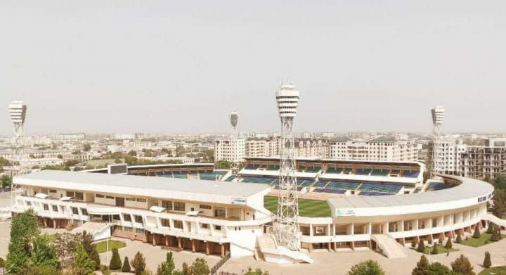
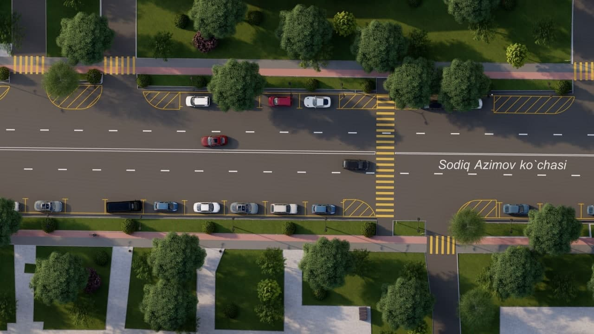
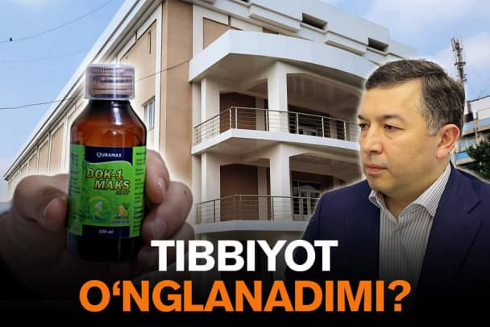
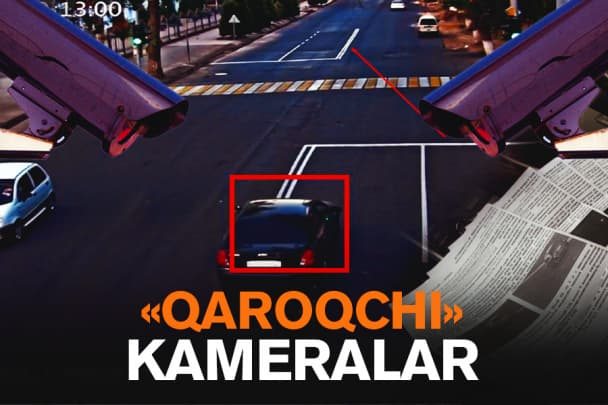
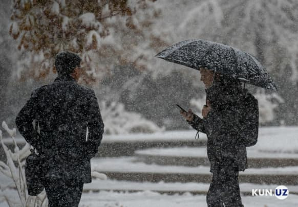

KUN.UZ YANGILIKLARI
O'ZBEKISTON
JAHON
IQTISODIYOT
JAMIYAT
FAN-TEXNIKA
SPORT
BUSINESS-CLASS
AUDIO
O'zbekcha
Русский
English
Buxoro shahri markazi buziladi

Toshkent ko'chalaridagi parkomatlar

Navbatdagi qonli qirg'in
Soledarda Ukraina qo'shini uchun taxdid yuzaga keldi
"AES"ning istiqboli yo'q
O'zbekistonda izdan chiqqan tibbiyot

Toshkentga navigatorsiz kelmang
Pul teruvchi qopqon

"Mehmondo'st" o'zbek tili
11-yarnardan OTM larda o'qish boshlanadi
